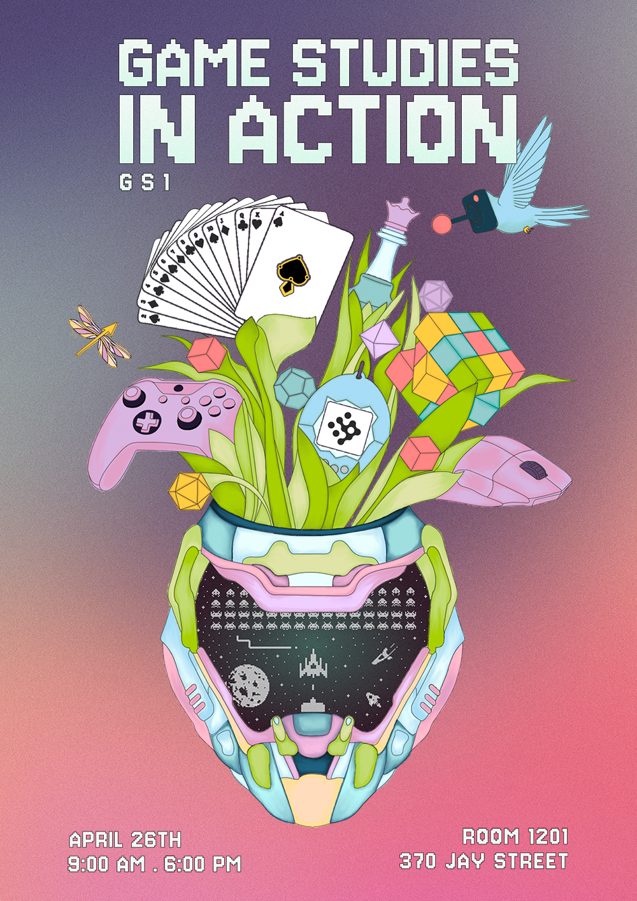
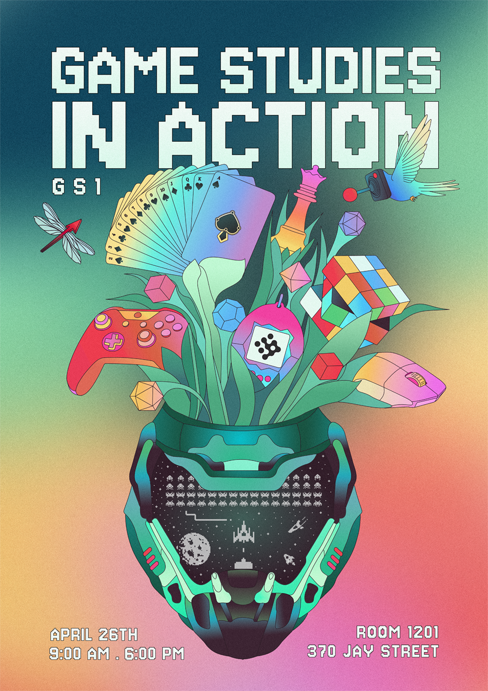

You're invited to gs1, the first academic conference presenting the scholarly work of NYU Game Center MFAs.
Our theme is “games in [CONTEXT]”. Context here can mean physical locales like classrooms or museums. It could
refer to social contexts such as modding communities and 2000s MMORPGs. Or context may be frameworks of design,
critical theory, or poetry. No matter the specific lens, our central question remains the same: what does the
world do to games and what do games do in the world?
Short for “Game Studies I”, a required course for Game Center MFA students, gs1 features in-progress versions of
students’ semester-long analytical research projects. In keeping with the hands-on nature of the overall
graduate program, the intention of this conference is to contribute to the larger discourse of thinking about
games critically. Join us for a day of presentations, roundtables, and workshops exploring games, play, and
design.
schedule
9:00 - 10:45am
Merely Players: Staging All the World Through Play
Workshop
Room 1201
We will be presenting a hands-on workshop that explores the concept of performance in
games and game-like activities, using four critical lenses. Each panelist will examine in
some way how games shape, and are shaped by, the act of performance.
Our presentation will provide participants with an overview of each of our specific areas
of research into performance and games:
Highlighting Bertolt Brecht’s Verfremdungseffekt (the distancing effect), Steele will
discuss anti-immersion techniques, using Danganronpa V3: Killing Harmony as a key
case study, to ask how disrupting seamless gameplay can encourage players to reflect
critically on the game and themselves.
Lancy will explore Chinese otome games through the lens of gender performance,
focusing on character creation and narrative design to investigate how romantic choice
games reconstruct or reinforce gender roles, drawing from Chinese gender studies to
frame this analysis.
A will focus on educational role-playing games, using the Reacting to the Past (RTTP)
pedagogical game design as her key case study, dissecting how role competition,
immersion, and the distancing effect cultivate critical thinking and can be used more
widely in mainstream games to do the same.
Ethan will analyze the always-on social game Fishtank.live through Erving Goffman’s
dramaturgical theory, focusing on what happens when the private “backstage” of identity
is removed.
We will then lead participants through a workshop game design activity that prompts
reflections on each of these parts of performance in game playing - and game making.
By synthesizing theory and practice, this workshop aims to spark new ways of thinking
about what it means to perform in, through, and because of games.
Steele Citrone
Brecht’s theory of Epic Theater focuses around the Verfremdungseffekt—also known as the Alienation Effect—that examines anti-immersive theater where the audience is made aware of their reality that they are watching a play. Utilizing Fernandez-Vara’s framework to understand games as performance, this paper seeks to examine the intersection between Verfremdungseffekt and games as the player serves as both the participant and the audience within the performance. To examine this new form of Epic Theater, Spike Chunsoft’s Danganronpa V3: Killing Harmony—or DV3:KH—will serve as a case study of what can be achieved when the player is made hyper aware of the fact that they are playing a game. Through DV3:KH and other meta breaking games, the duality of the player of being both the participant and audience to the performance of a game creates an active form of Epic Theater that no longer has a singular alienation effect that just the audience experiences. By introducing the alienation effect to the participant as well, both the active and passive roles in the performance are forced to reckon with the actions taken by the player. Through understanding DV3:KH, we can understand how this dual alienation can drive the player to end the performance early in refusal to play, creating a purer form of Epic Theater that forces the audience to be an active participant within the action and messages of the performance.
A Raff Corwin: Thinking Through Feelings: How RTTP RPGs Foster Critical Thinking Through Character, Competition, and the Distancing Effect
My paper investigates how the mechanics of the educational roleplaying game (RPG)
framework “Reacting to the Past” (RTTP),
created and managed by the RTTP Consortium at Barnard College,
effectively promotes critical thinking in student players.
My central questions
are: What elements of RTTP games successfully trigger critical reflection in players? And how
might those mechanics be adapted into mainstream game design to subtly cultivate critical
thinking skills via mainstream gameplay?
Using analyses of RTTP games and reflections from RTTP players and educators,
I identify the
unique intersection of narrative immersion,
competitive motivation,
and Bertolt Brecht’s
distancing effect (German: Verfremdungseffekt) in RTTP games and how,
together, these create pedagogical game mechanics that drive critical cognitive engagement in
players.
This
combination fosters what I term "critical feeling,"
a state in which players not only reflect on their
decisions but also interrogate the emotional drivers behind those decisions and their wider
consequences.
I conclude with the hypothesis that this blend of emotional investment and reflective distance is
particularly potent in encouraging critical thinking.
Incorporating these mechanics into
mainstream game design may offer a promising avenue for teaching critical thinking skills in an
engaging,
organic way in non-educational settings,
softly deepening political thinking,
decision
-making,
and critical reflection in both our personal lives and wider society
Lancy Zhan
“Female Only” Otome game raves in China, featuring female-to-male cross-dressing cosplayers, reveal a form of gender and gaming culture uniquely rooted in Chinese sociocultural contexts. By analyzing the formal design and fandom surrounding four mobile Otome games — Love and Producer, Tears of Themis, For All Time, and Light and Night — and incorporating gender theory along with meta - research on player reports, this paper explores how the culture surrounding Otome game players actively resists normative gender expectations in contemporary Chinese society. While the distinction between gender and sex, as articulated by theorists like Judith Butler, is often blurred in the Chinese linguistic and cultural context, the construction of male masculinity within Otome raves demonstrates a clear differentiation between the two. Although biological males are e xplicitly excluded from these rave spaces, the portrayal and celebration of an idealized male masculinity is embraced. This curated masculinity represents a culturally specific paradigm—one that exists only within the imaginative and affective space of Oto me games. The phenomenon echoes David Graeber’s concept of the “oppositional nature of culture,” as the Otome subculture in China manifests an implicit separation of sex and gender through practice, even before such distinctions are formally articulated in discourse
Ethan Troxell
This paper uses Goffmanian analysis to analyze social performance in the context of long-form social games. In particular, I explore post-irony as the dominant expressive device of “Fishtank.live”, a live-streamed social game-show where viewers have a direct impact on the game (a la “the Sims”) and show-runners manipulate contestants’ function and information. I argue that Fishtank requires a modification of the Goffmanian paradigm in circumstances where the front- and back-stage become indistinguishable and argue that this complex, amplified metaironic performance enables swift manipulation of participating contestants. I support this by examining how “irony-poisoned” rhetoric through internet memes has inspired new archetypes and performant social expectations, obfuscating conventional analysis holding ones front and back selves to be independent; crucially, I analyze the history and impact of Fishtank creator Sam Hyde in facilitating this cultural development. I conclude that both the way we perform ourselves as people and the strategies a game demands are both prescriptive, coercive systems of control, and show that in any unbalanced, asymmetric gameplay environment in which power or unequally distributed, post-irony can be used as a mechanism for control and manipulation. Fishtank, through meta-irony in particular, serves as a horrifying, unintentional metaphor for our surreal, modern, post-truth political reality.
10:45 - 12:15pm
History/Current Events
Room 1201
Presentations + Workshop
It’s widely recognized that video games, like all media, are influenced by current events. However, the full extent of interactions between games and “the real world” is not always immediately obvious. Some games are entirely informed by, or react to cultural or political developments in real life—while others shape the cultural landscape via their influence. Most do some combination of the two, but the full extent of these influences often remain underexplored outside of dedicated player communities. Through a series of case studies, we will dive into the reciprocal relationship between games and society, culminating in a short workshop guiding attendees to identify and share their own insights.
Christine Mi: Manufacturing Consent and Counter-Strike 2
This paper explores how media not only informs but also manufactures and reinforces belief systems, extending Noam Chomsky and Edward S. Herman's "propaganda model" from their 1988 book Manufacturing Consent into the realm of video games. Using Counter-Strike 2 as a case study, this analysis examines how design, aesthetic, and narrative framing contribute to implicit ideological messaging, focusing in particular on environmental storytelling, inventory and outfit design, and the loaded terminology of the game’s factions — “terrorists” and “counter-terrorists.” These semiotic choices — including handmade bombs and crumbling Islamic architecture — reiterate political narratives and imagery common in Western news media, especially those surrounding the War on Terror. While Counter-Strike 2 is (likely) not an overt attempt at propaganda, nor does it feature a story-driven “plot”, it nonetheless participates in a broader media ecology that normalizes certain ideologies and attitudes. This paper argues that video games, like traditional mass media, are capable of conveying powerful political messages, and that — specific to video games — this can be done through immersive and affective design rather than explicit rhetoric or dialogue.
Adrian Becerra: Rediscovering The Crayon Problem: Custom Content and the Push for Black Representation in The Sims 4
From its earliest iterations, The Sims franchise has served as a bastion of self-expression in video games. Over time this status has only been bolstered, as the series has amassed an extensive community of highly motivated custom content creators—devoted fans who constantly go above and beyond to support their beloved franchise by creating and sharing custom cosmetics, and in many cases, additional gameplay features. However, since the most recent installment of the series, these same fans have grown increasingly incensed by the failings of developers to deliver what they consider to be baseline essentials, particularly when it comes to representation. Building off the work of Mel Stanfill in her book Exploiting Fandom: How the Media Industry Seeks to Manipulate Fans, this work will examine the push for increased skin tone customization options in The Sims 4 as a case study on the ways companies have come to rely on—and potentially exploit—their fanbases, providing a historical account of the events involved, and ultimately making an individual determination as to whether or not these events constituted exploitation.
Patto Manriquez: Neo-colonization in Games: The Case of Rangers in the South
As cultural artifacts, video games are not free from bias and ideologies. Looking for a Chilean
identity in game design, neo-colonization becomes apparent in the local industry, leaving little
space for an authentic Chilean video game identity to proliferate.
Using the Chilean RPG video game Rangers in the South as a case study, this paper
investigates neo-colonization in games of the RPG and JRPG genres. This research takes as a
starting point the ideas of eurocentrism, decolonization and multiculturalism to understand
neo-colonization from a globalist perspective, as well as the origins of RPG and JRPG genre
conventions, delving into the research of medievalism in video games.
Based on this theoretical framework and through meticulous study of content and procedural
rhetoric in the aforementioned title, the deeply rooted influence of both eurocentrism and genre
conventions in the design are laid bare and analyzed.
The research concludes that Rangers in the South, even if it is said to be committed to cultural
representation, fails to do so by being built mostly using eurocentric cultural elements and JRPG
conventions without addressing local culture. Finally, a proposition is made to decolonize its
design through the use of alternatives to content and gameplay features that are inspired by
local history and culture, in order to shift the design in a more authentic direction.
Jib Leekitwattana: Touken Ranbu and Historical Conservation
In this essay , I will be exploring Games and historical conservation. In particular, I will be looking at how the collectible card game Touken Ranbu (DMM Games, 2015) presents history to influence historical conservation of Japanese Swords. Since its release, players of Touken Ranbu have been actively participating in conservation efforts for Japanese swords, ranging from visiting museums and shrines that collaborated with the game, to crowdfunding reconstruction efforts. In this paper, I will analyze how Touken Ranbu was able to influence its players to participate in historical conservation and educate them on Japanese swords by looking at two aspects of the game: narrative and character design. Using Richard Cole's concept of ‘Technocultural mashup,' I will be analyzing Touken Ranbu's representation of history in its narrative. Then, using interviews with the developers and my own experiences with playing the game, I will be looking at the anthropomorphic qualities of Touken Ranbu’s characters and how those character design choices lead to fans’s attachment to the characters, which in turn introduces them to the history of the swords. Finally, using news articles and the history of collaborations between Touken Ranbu and museums and shrines, I will explore how the game has created a dedicated culture that is engaging in conservation and going beyond playing the game. Through this analysis, I will conclude that Touken Ranbus’s depiction of history, which integrated historical context into its narrative and character design, has cultivated a dedicated fanbase that is willing to learn and go beyond playing the game to engage with Japanese history and conservation efforts.
Austin Burkett (he/him): Sonic Spectacle: The Sounds of Fascism in Helldivers 2
This paper seeks to analyze the relationship between the idea of a “Sonic Spectacle” and contemporary sound design practices in video games, using Helldivers 2 (2024) by Arrowhead Game Studios as a case study. Helldivers 2 specifically serves as an interesting lens for this topic, as the game is set in the world of a science-fiction parodic depiction of a hyperbolic jingoistic regime. In this way, it seeks to create this fictional fascist setting with its loud, distorted guns and explosions, creating spectacle out of the grand, chauvinistic, and inordinate soundscape. However, when compared to its contemporaries, it is actually quite on par with the loudness of other games, hinting at trends toward this spectacle being present in modern FPS games as a whole. This analysis seeks to link spectacle in media as a historic tool of fascism to how games can sonically represent their worlds, both procedurally and narratively. In order to do this, measurements and comparisons were taken of the integrated loudness of Helldivers 2, Call of Duty: Black Ops 6 (2024) by Treyarch, The Finals (2023) by Embark Studios, FragPunk (2025) by Bad Guitar Studio, Counter-Strike 2 (2023) by Valve, Marvel Rivals (2024) by NetEase Games, Valorant (2020) by Riot Games, I Am Your Beast (2024) by Strange Scaffold, Call of Duty: Black Ops III (2015) by Treyarch, and Call of Duty: Warzone (2022) by Infinity Ward.
Game Worlds
Room 616
Roundtable
Why is Miles Morales so compelling as a New York superhero? Why does Half-Life’s secret base in Black Mesa still haunt the players all these years later? How do Yume Nikki’s haunting aesthetics lend themselves to the player’s understanding of mental illness? And why does Mass Effect compel us to assume that space is ours to conquer? This roundtable brings together four panelists, each exploring a different game to unpack how game worlds immerse us through believable, navigable, and emotionally resonant design choices to shape players’ sense of presence and engagement. Each panelist will present a research-based analysis of their chosen game, highlighting how elements like representation, spatial geometry, exploration mechanics, and sensory cues contribute to storytelling. After the panelist question period, we will welcome any questions or feedback from the audience!
Rio Flores (he/they): Stand in the Ashes of a Trillion Dead Souls: Settler-Colonialism, Indigeneity, and Space Opera in Mass Effect
“To infinity and beyond!” is one of many popular “space” quotes. Upon first read, it is a fun invitation: explore the unending vastness of galaxies upon galaxies. Yet - why do we assume that space is ours to conquer? The video game Mass Effect exemplifies classic western space opera in its player character’s mission: advance humanity via planet colonization, resource extraction, and climbing the Milky Way’s political ladder. From Star Trek to Firefly, space opera narratives all share a common thread: it is humankind’s noble prerogative to conquer space. But what about communities who may already be living on these newfound, “uninhabited” planets? This paper will look at how Mass Effect persuades the player to believe that space colonization is right; to not worry about the possibility of Indigenous lives that live(d) on so-called empty planets ready for the taking. This research will examine how Mass Effect’s mechanics of exploration via manual spaceship flight, planet surveying, and groundside driving create an experience for the player that convinces them of both their righteousness in being a space settler-colonizer and to have them ignore that, in the game's universe, Indigeneity is not valid, but the structures of violence that steal land and life from Indigenous people are.
Yin Hong (she/her): Dive into Your Subconscious: Dream-like Design and Mental Reflection in Yume Nikki
Portrayals of mental illness appear frequently in video games, reflecting the growing
awareness of mental health issues in our society. Existing research has discussed how
psychoanalytic theory can be used to shape uncanny feelings in video games. However, it has not
yet delved into the effects of psychoanalytic therapy in game design on players’ mental health.
This paper will focus on the case of Yume Nikki, a psychological horror game, and explore how
its game design relates to Freud's psychoanalytic theory, which elicits psychological empathy
from the players. Finally, the paper digs into the potential of video games as a part of mental
healing therapy.
Yume Nikkiis known for its creepy art style and dream-like gameplay. The protagonist,
Madotsuki, indicates psychological isolation and emotional repression as she explores her dream
world. In the visual aspect, the symbolic features of objects can represent fragmented memories
and deep fears. On the gameplay level, non-linear exploration and the absence of dialogues allow
players to discover their own interpretations. Through analyzing the surrealism dream-like
designs in Yume Nikki, this paper follows the theory of dream interpretation therapy to
demonstrate how these designs reveal the patient's subconscious. In addition, this paper
continues to investigate the fan community, game reviews, and related videos of Yume Nikkito
examine the specific elements and processes that evoke players’ empathy.
Players tend to have the opportunity to project their trauma or depression due to the
dreamlike experience and the lack of narrative and goals in Yume Nikki. By further understanding
various personal experiences, such as those shared in the video "How Yume NikkiSaved Me from
Depression Explained in 6 Minutes", the possibility of video games becoming a part of the
mental healing process is revealed. Yume Nikkiallows player to explore their inner selves,
create
a journey not about the story in the game, but the personal experience of themselves.
Maggie Wang (she/her)
This paper investigates how IP-based open-world games can borrow design principles
from theme parks to enhance player immersion, using Marvel’s Spider Man: Miles Morales as a
case study. While both theme parks and open-world games rely heavily on spatial design to guide
users and construct experience, IP games offer a unique advantage by leveraging pre-existing
narrative frameworks and emotional associations. This research explores how techniques such as
spatial zoning, visual landmarks (weenies), environmental storytelling, and diegetic cues create
navigable, emotionally resonant virtual worlds.
Drawing on theories from David Younger and John Hench, this research examines how
Miles Morales uses spatial zoning, visual landmarks, diegetic cues, and dynamic events to
construct a cohesive and emotionally resonant game world. The paper argues that the game uses
its IP not merely as aesthetic content but as a structuring device, facilitating aspirational design
and “mental real estate” that shortens the player’s path to immersion. Furthermore, the game
demonstrates how dynamic events, setpieces, and open-ended exploration can balance player
agency with narrative progression, mirroring theme park techniques like pacing, story hooks, and
multisensory engagement.
The study concludes that treating open-world spaces as narrative environments—rather
than neutral backdrops—can significantly improve the emotional depth and coherence of
gameplay. By combining interactive freedom with curated experience design, IP-based games
like Miles Morales effectively create digital theme park experiences. This research contributes to
cross-disciplinary discussions on immersive design and offers new insights into how
entertainment environments can inform future game development.
Zezhen Wei (he/him): How Does Half-Life Subvert FPS Design Conventions at the Time to Create a Sense of World?
How does a video game world give players a sense of the real world? Although the answer can come from many angles, such as graphics, story and scale, this essay will specifically focus on the worldbuilding aspect. More specifically, it concerns how the place is built and how the place functions. The essay contrasts video game worlds built for entertainment first with those built as logical spaces first. There are two specific case study subjects, Doom (and Doom-likes) and Half-Life. The article argues that to build a believable world in video games, non-hegemonic design should be considered. Non-hegemonic design is defined here as the design practices where the traditional gameplay concerns, such as the accumulation of power, are not the only focus of design ethos. The article uses Doom as a hegemonic example. Doom only designs its world with secrets, combat varieties and resource management. In contrast, Half-Life considers other factors as well, such as the daily functions of the buildings and how aliens behave when the players are not around. In Half-Life, the player experiences intersect with many other elements of the game, making cohesion one of the strongest qualities in its presentation. Gameplay with constraints makes the player’s presence more believable, which in turn creates the authenticity of space. By shifting emphasis on the design values, Half-Life creates a more convincing space than all the shooters before it.
12:15 - 12:40pm
LUNCH BREAK
12:40 - 2:00pm
Form
Brown Bag Roundtable
Room 616
In this roundtable discussion, participants will address the subject of “form” in game design from a range of research perspectives, but with a particular focus on platforms and systems. Marty’s presentation explores the main perspectives in games (first person, third person, strategic) and how their typical UI design reflects a natural internal hierarchical informational model that humans use to sort information. Nengkuan examines how Destiny 2 constructs and manipulates players’ understanding of “victory” through its progression systems (e.g., leveling, loot acquisition, triumphs). Adriana is interested in how poetic repetition operates as a key structural and rhetorical device in the narrative design of contemporary roguelikes, using Returnal (Housemarque) and Hades (Supergiant) as her main case studies. Bruce considers how Ultrakill uses unique mechanics to convey a fearless spirit to players, inheriting this from the original DOOM. Patrick interrogates the differences in the development of deck-building games on physical platforms versus digital platforms through the lenses of Dominion and Slay the Spire.
Adriana Jacobs
While the cyclical, repeating structure of roguelikes may challenge traditional storytelling, contemporary roguelikes like Returnal (2021, Housemarque) and Hades (2020, Supergiant) prove that the genre can offer players complex embedded and emergent narrative experiences. Drawing from literary studies, and primarily the field of poetry, I consider what theories of poetic repetition can teach us about the narrative design of contemporary roguelikes. I am interested in how games like Hades and Returnal (my main case studies) utilize repetition to integrate gameplay and storytelling and do so in a way that minimizes the risk of becoming repetitive, a condition associated with tedium and monotony. In poems, as in roguelikes, repetition may be experienced simultaneously as comforting and familiar, routine and boring. But it is also a call for attention, signaling change and novelty. Through a range of devices—for example, anaphora, rhyme, and parallelism—poets charge the recurrence of words, images, and forms with new meaning. Using comparable devices, and by centering repetition in their storytelling, the narrative design teams of Hades and Returnal maximize the capacity of repetition to hold multiple meanings in its own unique present moment, thereby forging a powerful relationship between repetition and affect that proves durable across multiple, procedurally generated playthroughs.
Marty Scott
User interface (UI) design in video games often follows established standards
enshrined in their respective genres and perspectives. This has led many designers to
treat the layout and functionality of UI as a foregone conclusion. However, when we
examine the human elements of preference, accessibility, and utility, it becomes clear
that these standard choices are not merely inherited conventions. Instead, they reflect
deeper theoretical and practical considerations.
This project investigates the intentions behind common UI design decisions and
shows that these elements carry significant weight, shaping not only the interaction
players have with a game but also a deep, intentional processing of a game's
information—information that can be applied across a broad range of purposes,
including narrative or aesthetic aims, not just utility.
Examining two of the most prominent and distinct perspectives—first-person and
omniscient—in two of the most widely known franchises, Halo Infinite (2021) and
StarCraft II (2010), we explore the ways in which players apply inherent cognitive
hierarchical models to process visual information. In doing so, we reveal the depth and
richness of HUD information, which holds the potential for much more than its
traditionally sparse, utilitarian application.
Nengkuan Chen
This research explores how Destiny 2 constructs and manipulates players’ understanding of
“victory” through its progression systems. Meanwhile, did the player community reinforce
this rhetoric? While Ian Bogost introduced the concept of procedural rhetoric, which video
games use systems and mechanics to convey ideological messages, this research is trying to
explore whether the Destiny 2 community actively reinforces the game’s persuasive logic,
which the game equates time investment and repetitive labor with progress and prestige,
players amplify this message by socially legitimizing such values.
Players celebrate quantifiable achievements and establish norms that equate victory with
visible labor and statistical accomplishment through platforms like Reddit, Discord, and
third-party stat-tracking tools such as Destiny Tracker and Raid Report. This kind of
community atmosphere not only embodies the game's core concept but also reinforces it, in
which success equals continuous effort and measurable output.
Methodologically, this research combined the analysis of the progression system, textual
analysis of the player communities, and interviews with the player. It concludes that rather
than passively absorbing the procedural information of the game, the community of players
actively participates in a feedback loop in which time invested is equivalent to value.
Eventually, Destiny 2 and its community co-construct a rhetoric of victory in which success
is
quantified, achieved, and demonstrated through sustained time investment.
Bruce Zhong
Fast-paced first-person shooters often evoke adrenaline and excitement, but some, like Ultrakill, reach beyond entertainment to express a deeper spirit. This paper explores how Ultrakill, a fast-paced retro shooter, uses its unique mechanics to convey a fearless spirit to players. While many FPS games encourage cautious, cover-based strategies, Ultrakill instead rewards constant motion and direct confrontation. Its high-speed movement system and aggressive game design pressure players to stay mobile, teaching them to fight while in motion rather than retreat. Central to this experience is the parry mechanic, which allows players to reflect nearly any attack if timed correctly. This mechanic is not only empowering but also reinforces a feeling of mastery and fearlessness. Furthermore, Ultrakill removes a common source of anxiety in shooters—resource scarcity—by providing players with unlimited ammunition and allowing them to regain health through close-range combat. Drawing from peer-reviewed papers of retro shooters and Ultrakill’s developer interviews, this paper argues that Ultrakill grants players radical agency and encourages them to face danger head-on, which carries forward the legacy of Doom. Ultimately, this paper suggests that Ultrakill is not just exhilarating to play but also meaningful, as it uses its mechanics to teach players how to be brave in dangerous situations.
Patrick Liu
Deck-building games (DBGs) have flourished on both physical and digital platforms, yielding some unique design opportunities and player experiences. This study investigates the role of platform-based affordances and constraints in shaping DBG mechanics by comparing the physical board game Dominion (2008) and the digital hybrid Slay the Spire (2019). The two-part question that drives this analysis is: in which ways do platformic characteristics (physical/digital) of DBG design modulate player interactions, procedural complexity, and materiality or expandability? Drawing on both foundational academic literature across fields of game design and platform studies, but also close work with specific cards designed for the two games, this paper contends that the physical artifact of Dominion supports multiplayer social dynamics via mechanics of shared card pools and ritualistic touching, whereas Slay the Spire uses digital automation to create an experience of solitary, procedural complexity. Through direct player interaction with physical components and social negotiation, physical DBGs emphasize immediate player engagement—exemplified by Dominion’s “Attack” cards and manual shuffling (Engelstein and Shalev; Booth). In contrast, digital DBGs like Slay the Spire deploy algorithmic systems to control detailed synergies and variables, focusing on self-optimization (Jagoda). Moreover, the concept of "materiality" that exists in physical games makes the ownership and customization a tangible experience, while digital platforms favor the expandability aspect through modular updates and community credibility. The takeaway emphasizes that the platform determination on a granular level defines the design focus for these games, with physical games favoring social and touch elements and digital games allowing for both depth and scale. These distinctions reflect the genre’s flexibility, and imply chances for play across platforms. By clarifying how such platform restrictions frame player experience, this work contributes to ongoing conversations in game design that offer guidance for creators traversing these channels between the physical and the digital.
2:00 - 2:45pm
Game Studies Around the Game Center
Room 1201
Presentations
A series of presentations featuring in-progress research from faculty, visiting scholars, and
independent studies.
Speakers:
Clara Sanchez-TrigoBasil Lim
Alex Tang & Kavika Sharma
Austin Burkett (he/him) & Patrick Trinh
2:45 - 4:15pm
Player Communities
Room 1201
Presentations + Q&A
How do platforms, cultures and historical circumstances shape online communities? What makes a game community thrive—and what causes it to fall apart? Can a healthy player culture be designed, or does it emerge on its own? Should developers regulate player communication to limit toxicity, or should they be more hands off to make the game feel more alive? From MapleStory’s golden era to the fall of Echo VR, the simmering tensions in The Sims 4, the demise of Goose Goose Duck, and the stark cultural griefing differences across World of Warcraft - these stories highlight not only how communities co-create games, but how cultural and social contexts shape player experiences in unpredictable ways. Ultimately, this session asks: what does it mean to build a lasting digital society? And how can we design for communities we don’t fully control? Presentations and discussion with interactive prompts scattered throughout.
Emma Raventos: From Reactive Moderation to Proactive Relational Design: Speculating on Relational Design Through Echo VR’s Community Experience
As virtual reality becomes increasingly immersive, the emotional and psychological stakes of social interactions in these spaces intensify, often exacerbating issues of toxicity and anti-social behavior. Echo VR, a competitive multiplayer game developed by Ready at Dawn, provides a compelling case study of how developers have navigated these challenges through reactive moderation tools—ranging from voice muting and personal space bubbles to behavioral reminders and lobby segmentation. While these interventions offered short-term relief, they arguably contributed to further isolation among players, failing to address the relational roots of in-game toxicity. This paper employs participant observation, interviews with key community gures, and insights from game design and community studies to investigate the limitations of these approaches. Through a speculative lens, it explores the potential of relational design— game mechanics and systems that foster empathy and connection—as an alternative to competitive metrics and separation-based solutions. The ndings suggest that fostering community health in VR spaces may require a paradigm shift: from shielding players from one another to empowering them to relate meaningfully within shared digital environments.
Vany Uzman: Simmering In Hate: Toxicity in The Sims 4 Community
Toxicity within gaming communities often reflects deeper tensions between players and
developers. It is frequently fueled by unmet expectations, financial and emotional investment, and
conflicting visions of the game's future. With The Sims 4, the toxicity is visible enough that
it has
sparked a debate about the game's direction and the perceived shortcomings of its content. This
research will explore why The Sims 4 community is considered toxic, focusing on finding
patterns of
player dissatisfaction, the recurring backlash to new releases, and the nature of discourse across
the various platforms where the community can be found.
Drawing from Twitter threads, EA forum discussions, fan commentary, and academic literature on
gaming culture, the study examines how different types of players—from mod-free purists to
creative builders and storytellers—engage with and critique the game. Special attention is given to
how responses differ across platforms, with some digital spaces cultivating more negativity than
others. By situating this analysis within broader discussions about toxicity in gaming, the research
considers whether The Sims 4 community is an outlier or symbolic of more significant trends in
digital communities and fandoms.
Beyond identifying what players feel the developers have done right or wrong, the research also
investigates the paradox of continued engagement: Why do players remain so deeply involved in a
game they often criticize? Finally, this study will reveal how passion, nostalgia, and frustration
can
fuel the toxicity within the community, one that mirrors the complex relationship between game
developers and their audiences.
Evelyn Yang
This research investigates how streamers influence the design, play culture, and eventual
decline of social deduction games, using Goose Goose Duck as a case study. At the height of
the game’s popularity, Chinese streamers played a critical role in shaping both the in-game
behavior and broader community norms—often introducing additional rules, expectations, and
communication styles that diverged from the original design. This raises a key question: when a
social game becomes a live-streaming phenomenon, does the presence of influential streamers
help or harm its long-term viability?
To answer this, I conducted comparative analyses between Goose Goose Duck and Among Us,
observing how streaming affected gameplay conventions, communication strategies, and player
onboarding. I also examined cultural differences across regions—especially between Chinese
and Western servers—focusing on varying attitudes toward order, authority, and social
performance. Drawing from personal experience as an early player and supported by
community forums and gameplay data, the study explores how grassroots rulesets imposed by
streamers created high barriers to entry for new players and gradually undermined the
spontaneity central to the game’s appeal.
Ultimately, I argue that while streamers can amplify a game’s reach and visibility, their influence
can also crystallize a rigid metagame that alienates casual players and shortens a game's
lifecycle. This research contributes to broader conversations about player agency, live ops
design, and the challenges of sustaining healthy online communities in multiplayer social
games.
Yuecheng Zhou: Cultural Perspectives on Griefing in World of Warcraft
Griefing - the intentional disruption of other players' gaming experiences - is a controversial issue in online multiplayer games. This research examines how cultural differences shape perceptions and regulatory responses toward griefing behaviors within the global gaming community, focusing on the famous multiplayer online game World of Warcraft (WoW). By analyzing the differing attitudes and policies of players and developers in the United States and China, the paper identifies how cultural norms and expectations directly influence both player behaviors and moderation practices. By studying scholarly literature, official developer documents, and community case studies, this study demonstrates that griefing is not universally defined but contextually constructed. Gaming communities in the US tend to praise individual freedom and encourage competitive play. They often identify certain griefing actions as legitimate strategies. In contrast, Chinese gaming communities prefer collective harmony and benefits for everyone. This leads to stricter interpretations and stricter regulations against behaviors classified as griefing. The analysis also explores historical trends, examining an evolving global emphasis toward tighter moderation policies and community norms due to changing player expectations and increased sensitivity of toxic behaviors. Lastly, this research concludes that understanding griefing through a cultural lens is necessary for game developers who wish to build a diverse and engaging online environment. By understanding these differences, game developers can create culturally sensitive policies and moderation tools to improve player experiences across diverse gaming communities.
Olin Gao
The highly community driven MMORPGs of the decade of the 2000s have suffered a precipitous
decline in recent times. In their place rose multiplayer games that seem to de-emphasize organic
and spontaneous player-to-player interactions. We will analyze the history of the 20051 MMORPG
MapleStory as a representative case study to dissect the circumstances that brought about the
golden
age of MMORPGs, and the circumstances that ultimately led to its decline.
MMORPGs like MapleStory, Runescape and World of Warcraft were allowed to
dominate the PC
gaming landscape of the decade of the 2000s due to the sheer prevalence of PC gaming piracy that
deincentivized monetization models that weren’t subscription or microtransaction based. The lack of
strict internet communication regulations, especially those targeting children, allowed these games
to
have extremely vibrant in-game communication systems, making them feel like living virtual worlds.
Even among other multiplayer genres, the appeal of MMORPGs scales directly with the size of the
playerbase, creating a positive feedback loop. Ironically, the subsequent complacency of the
companies
that made these games created a non-interventionist attitude towards player-to-player interactions
and deliberate in-game inconveniences that actually facilitated socialization. Ultimately, the
decline
of the MMORPG era was brought about by platforms like Steam driving down PC game piracy,
along with an increase of internet communication regulations leading to centralization around a few
external communication platforms like Discord. Even among other multiplayer genres, MMORPGs
are notable in that their appeal scales directly with the size and activity of their playerbase. It
is
difficult to imagine that the conditions of this era would be recreated, making the decade of the
2000s
a unique insight into the games of the free internet - experiences that will never again be
experienced
by human civilization.
Games Imitate Life Imitates Games
Room 616
Presentations + Roundtable
Even when fantasizing about exotic worlds, heady rules, and enlightened systems, our world inevitably bleeds into the designed fictions of our imagination. It carries the weight of our world's history, many cultures, and socioeconomic dynamics. Whether intentional or consented, games represent us and our lives, whether we like it or not. Are we doing a good job? Each panel member will briefly present on their area of study before we engage in a lengthier roundtable discussion that will culminate in a Q&A with the audience.
Nico Carlson (he/him): The Persistent Threat of Indigenous Appropriation: Slow and Structural Violence in Video Games
After generations of large-scale violence against Indigenous peoples across the globe— from mass genocide to cultural erasure to displacement —modern society now favors a more gradual form of violence, one defined by Rob Nixon as “slow violence”. This paper analyses the effects of appropriative depictions of Indigeneity in video games through the specific examples of Monster Hunter: Worlds, which narrativizes Indigenous erasure in the face of a domineering colonial culture, and Horizon: Forbidden West, which has the (white) player character cosplay in armors laden with Indigenous aesthetic in an ethnically “color blind” world. We will examine these games through the central lenses of Nixon’s slow violence, a “violence that occurs gradually and out of sight … [a] delayed destruction that is dispersed across time and space … that is typically not viewed as violence at all”, as well as David Graeber’s writings on structural violence, highlighting the pervasive threat of violence as a tool for maintaining oppressive power structures. To examine these games in this context, we will explore a host of ecocritical, anthropological, historical, and ludological studies of Indigeneity and how games relate to Indigeneity. Though this paper will primarily focus on the Indigenous Pasifika (loosely: any Indigenous inhabitant or diaspora member from the regions of Polynesia, Melanesia, or Micronesia), and even more specifically, kanaka maoli or Native Hawaiians, the principles of this study could be applied to any colonized Indigenous people and aspects of this study could be applied to any marginalized community. In the conclusion, this paper will loosely assert a framework for games to better represent Indigeneity, using a small assortment of games that effectively, restoratively, and impactfully represent Indigenous culture through the medium of games. This paper, therefore, emphasizes not only the importance of authentically and healthily representing Indigeneity in art but also the harmful effects of the seemingly innocuous, everyday appropriation that is firmly embedded in popular culture.
Alex Tang (she/they)
The role of horror in narratives of otherness has long been a linchpin in highlighting the grotesque mistreatment of minority identities. This is especially true of queer feminine bodies. The fixation and mutilation of these bodies in the horror genre has long represented society’s fetishization of non-heteronormativity using narrative toolings, such as the “final girl” and “female mutilator” archetypes. These tropes demonstrate the ways in which the feminine body has been policed and manipulated by other identities, especially those belonging to the heteronormative. Signalis challenges this canon by displaying and emphasizing queer femininity through its majorly female cast, all of whom have been abused and maligned by their rigid, patriarchal society. The fetishizing gaze common in stories of Lovecraftian horror compels these characters toward their own eternal struggles of rebellion as they attempt to actuate their desires and truths. The game highlights their perseverance in their many attempts to escape their given roles and transform into a self-actualized version of their true selves in spite of the gradual corruption of their minds and bodies. Despite often not defeating or accomplishing their goals, they continue to endure these challenges and make space for yet another attempt in an eternal struggle against oppression, control, and destruction.
Caelan Gadwah-Meaden (he/him)
This essay explores the uncanny in games, with a particular focus on Shin-Chan: Me and the Professor on Summer Vacation, and a deep look at a subset of the “cozy game” genre. I begin with an establishment of what it means for a game to feel “uncanny,” then move into an analysis of several aspects of Shin-Chan’s design and narrative, and how these aspects result in an uncanny feeling when playing the game. With a core goal of understanding why Shin-Chan came to be this way, I then move on to outline what constitutes a “cozy game,” proposing a sub-genre, “vacation simulators,” which focus on player entitlement to land, goods, and affection. In the final part of my analysis, I compare Shin-Chan to its predecessor, Boku no Natsuyasumi, a game focused on limiting the player, to show that the previously explored aspects in which the former becomes uncanny directly result from design choices which facilitate player entitlement. Through this comparison, I conclude that Shin-Chan: Me and the Professor on Summer Vacation was an attempt to modernize the gameplay and narrative of Boku no Natsuyasumi into the wildly popular “vacation simulator” genre, and that this attempt directly resulted in the uncanny experience of playing the game.
Kavika Sharma (she/her)
The gross misrepresentation of India in videogames can be traced back to pro-colonial rhetoric
and inclusion of stereotypes perpetuated by orientalists. Just like other forms of media have
begun their journey of authentic portrayals of Indian people, videogames seem to be slowly
following suit. In times like these, it is important to explore the complexities and nuances of
telling these stories. To ask, “What is good representation?”
Is it enough to give a character brown skin, an Indian-sounding name, some personal history and
origins that can be traced back to one of the major cities in India? This, to me, is superficial
representation. For true representation, it is important to understand and showcase the culture
and values of a country or ethnic group. This paper explores the forms in which Indians and their
cultures are represented in Videogames by analysing the concept of representation of minorities,
focusing on the India, in the context of history and geopolitics. Games such as Genshin
Impact–a
mainstream, big-budget gacha game –and Venba–A narrative cooking game centered around a
South Indian family who immigrate to Canada in the 1980s–will be used as examples to reflect
on the different approaches to representation taken by games.
Fangling Wu (she/her)
This project explores how Kentucky Route Zero (KR0) adapts the narrative logic of
magical realism into a uniquely interactive and spatial form. Magical realism, rooted in Latin
American literary traditions and political critique, is characterized by blending the mundane and
the surreal, ambiguous temporalities, and deep engagement with trauma. While traditionally
expressed through dense language and controlled narration, this research examines how the
genre’s core features translate into game mechanics, spatial storytelling, and player
experience.
Drawing from key literary works—Juan Rulfo’s Pedro Páramo, Franz Kafka’s The Castle,
and Gabriel García Márquez’s One Hundred Years of Solitude—this project argues that
KR0
does not merely reference magical realism but reimagines it. The game transforms internal
literary devices into external, playable systems: memory becomes landscape, bureaucracy
becomes disorienting navigation, and cyclical time becomes nonlinear progression. In doing so,
KR0 allows players to inhabit and emotionally engage with the logic of magical realism,
rather
than passively interpret it.
The essay and presentation will demonstrate how KR0 evokes affective and political
dimensions through mood, pacing, fragmentation, and limited player agency. Ultimately, this
project concludes that KR0 does not adapt magical realism so much as to evolve it, offering a
model for how games can inherit and transform literary traditions into embodied, haunting
experiences. This research contributes to a growing understanding of how games can serve as
entertainment and critical narrative forms.
4:15 - 4:30pm
BREAK
4:30 - 6:00pm
Gacha or Gotcha?: Becoming Attached to Objects
Room 1201
Workshop
Why do we treasure digital items that we can’t physically hold? What makes some objects feel so valuable or disposable and how does this tie to our socioeconomic statuses? Our interactive panel will explore how value is constructed, challenged, and felt in games through objects and the meanings we attach to them. Based on our individual research from games like Pokémon Trading Game, Unpackin, Gacha and player behavior, our session combines academic insights with a fun, audience-driven Gacha game. Audience members will both play and understand through guided presentations how scarcity, sentimentality and economic status influence our self-worth. A discussion will be held at the end to determine whether your experience constitutes a game. Come ready to pull, swap, and maybe even throw away something you just got attached to. Is this a panel? Is it a game? You decide.
Victoria Kao
This paper critically analyzes Unpacking (Witch Beam, 2021), a zen puzzle video game
widely praised for its use of environmental storytelling to depict a narrative that draws
emotion from nostalgia and achieving personal milestones. While the game has over one
million downloads and numerous awards including Game of the Year, its embedded
narrative implicitly highlights a life of financial stability and privilege. This paper argues
that Unpacking depicts a class-specific experience that inadvertently ignores lower
socioeconomic identities through its object choices, living environments, and implied life
trajectory.
This paper examines theories of material culture, historical anthropology studies, game
studies and the developers’ intentional game design. The analysis incorporates insights
from The Meaning of Things (Csikszentmihalyi & Rochberg-Halton, 1977), Igor Kopytoff’s
commodification theory, and Colin Renfrew’s work on prestigious objects to examine how
players engage with in-game items to construct identity. It also references Klara Svensson
and Wilma Bergman’s work on Unpacking’s player interpretation and considers the
developers' own reflections on cultural design decisions.
Ultimately, this paper highlights how the game’s environmental storytelling reinforces
socioeconomic class statuses, presenting a version of adulthood marked by consistent
upward mobility, job and relationship success. This paper contributes to ongoing
conversations within games studies about identity, representation, and inclusion. It
concludes with a call for greater awareness of class dynamics in narrative game design and
argues that more inclusive material storytelling can foster deeper resonance across diverse
player communities.
Ethan Tobin
In this presentation, I plan to break down the common factors in the economics of trading card games and then show the impact of multimedia on the Pokemon Trading Card Game. As I present, I will discuss important topics like economic status, disposable income, and scarcity, and how those can affect the value of hobbies through other popular trading card games. I then will discuss the impact of marketing especially when it comes to other forms of media like the Pokemon anime and Pokemon video games. Following that, I will proceed to give a brief summary of the history of the competitive scene of the Pokemon Trading Card Game. I then will relate back to the other merchandise in the series and show the correlation between these and their related cards. Overall, this analysis will showcase how big of an impact that the other forms of media have on the economic state of the Pokemon Trading Card Game.
Zoey Tang
The phenomenon of a blurred boundary between work, life, and games is emerging more frequently. In this context, “work” particularly means the act of labor that players perform while playing the games. There have been studies on players of MMORPGS like Star Wars Galaxies that describe their game play as obligation, tedium, and more like a second job than entertainment. (Yee 2006) And on Reddit/Forums, it is also common to see players’ complaints about "burnout" or feeling like "clocking in" to complete daily missions in gacha games like Genshin Impact. There are also more and more job simulation games that deliberately simulate real-life occupations, which are surprisingly enticing to many players (aSwordBear 2022). Aside from these, games like Love and Deepspace that blur the boundary between life and game. The essay explores the reasons behind this phenomenon from both players’ perspectives and the game producers’ intentions. The essay discusses the player psychology aspects, such as FOMO (Fear of Missing Out) (Przybylski et al. 2013), seeking easy achievements, and grinding habits. It also uses Love and Deepspace as an example to showcase how the game producers create a real-life-like social environment with virtual characters that fulfill players’ need for companionship. The essay also explains the impacts of this phenomenon, such as how these games impact players’ thoughts and ideologies (Kelly 2015), and how the blurred boundary affects players’ normal life routine. In conclusion, the essay uses analysis, literature reviews of second-hand sources, and empirical evidence to discuss the reasons and impacts of the blurred boundaries between work, life, and games.
Chika Zhang
This research examines the development and impact of gacha monetization
models in East Asian mobile games. It begins with the rise of gacha systems in Japan
through games like Puzzle & Dragons, and follows their spread into China with titles
such as Million Arthur and Onmyoji. As gacha mechanics became more common,
they shaped the region’s mobile game design and player expectations, especially
among Gen Z. Based on this background, the project focuses on these key questions:
whether gacha pricing is reasonable, what types of monetization players prefer, and
why players keep playing even when they feel manipulated.
From a design perspective, gacha systems succeed because they are built on
psychological mechanisms that encourage spending, such as randomness, scarcity,
and reward anticipation. However, players tend to reject pay-to-win mechanics and
non-transparent gacha odds. Many players continue to play due to emotional
investment, the sunk cost effect, and social pressure within player communities. For
younger players, especially in East Asia, gacha has become a normalized part of
mobile gaming.
Although the model is financially effective, this research argues that it
represents a form of behaviorally-driven exploitative pricing. The gap between how
players talk about gacha and how they actually behave reveals the complex emotional
and social forces at work. By understanding how gacha monetization works and why
it continues to succeed can help us better reflect on how monetization shapes both
game design and player behavior today.
Haoyang Li
As the gaming industry continues to grow, the definition of what qualifies as a "real game"
remains ambiguous, especially outside the gaming community. While scholars like Mia
Consalvo have explored this concept from the perspective of active players, less attention has
been paid to how non-gamers define legitimacy in games. This paper argues that non-gamers,
rather than traditional gamers, are more likely to hold rigid definitions of what qualifies as a
"real" game due to media influence and a lack of personal experience. Using the framework
outlined in Consalvo’s Real Games, this research draws on academic literature, player
reviews,
and public discourse to examine the qualities most often associated with “real games”: length,
mechanics, publisher status, popularity, and price.
The findings indicate that people outside the gaming community often associate “real games”
with big-budget, skill-based titles, such as AAA first-person shooters. These perceptions are
shaped by mainstream media and the exclusive attitudes in online gaming spaces. This rigid
understanding of what is a “real game” not only reinforces existing stereotypes but also
influences industry trends by privileging certain genres and developers. More importantly, it
creates cultural and psychological barriers for new or casual players, limiting the accessibility of
gaming. By examining how these definitions are formed and identifying who gets excluded, this
paper provides insights into how the industry and community can create a more welcoming
environment for all players.
9:00 - 10:45am
Merely Players: Staging All the World Through Play
Workshop
Room 1201
We will be presenting a hands-on workshop that explores the concept of performance in games and game-like activities, using four critical lenses. Each panelist will examine in some way how games shape, and are shaped by, the act of performance.
Highlighting Bertolt Brecht’s Verfremdungseffekt (the distancing effect), Steele will discuss anti-immersion techniques, using Danganronpa V3: Killing Harmony as a key case study, to ask how disrupting seamless gameplay can encourage players to reflect critically on the game and themselves.
Lancy will explore Chinese otome games through the lens of gender performance, focusing on character creation and narrative design to investigate how romantic choice games reconstruct or reinforce gender roles, drawing from Chinese gender studies to frame this analysis.
A will focus on educational role-playing games, using the Reacting to the Past (RTTP) pedagogical game design as her key case study, dissecting how role competition, immersion, and the distancing effect cultivate critical thinking and can be used more widely in mainstream games to do the same.
Ethan will analyze the always-on social game Fishtank.live through Erving Goffman’s dramaturgical theory, focusing on what happens when the private “backstage” of identity is removed.
We will then lead participants through a workshop game design activity that prompts reflections on each of these parts of performance in game playing - and game making. By synthesizing theory and practice, this workshop aims to spark new ways of thinking about what it means to perform in, through, and because of games.
Panelists + Abstracts
10:45 - 12:15pm
History/Current Events
Presentations + Workshop
Room 1201
It’s widely recognized that video games, like all media, are influenced by current events. However, the full extent of interactions between games and “the real world” is not always immediately obvious.
Panelists
Game Worlds
Room 616
Roundtable
Why is Miles Morales so compelling as a New York superhero? Why does Half-Life’s secret base in Black Mesa still haunt the players all these years later? How do Yume Nikki’s haunting aesthetics lend themselves to the player’s understanding of mental illness? And why does Mass Effect compel us to assume that space is ours to conquer?
Panelists
12:15 - 12:40pm
LUNCH BREAK
12:40 - 2:00pm
Form
Brown Bag Roundtable
Room 616
In this roundtable discussion, participants will address the subject of “form” in game design from a range of research perspectives, but with a particular focus on platforms and systems.
Panelists
2:00 - 2:45pm
Game Studies Around the Game Center
Room 1201
Presentations
A series of presentations featuring in-progress research from faculty, visiting scholars, and independent studies.
Speakers:
Clara Sanchez-TrigoBasil Lim
Alex Tang & Kavika Sharma
Austin Burkett (he/him) & Patrick Trinh
2:45 - 4:15pm
Player Communities
Room 1201
Presentations + Q&A
How do platforms, cultures and historical circumstances shape online communities? What makes a game community thrive—and what causes it to fall apart?
Panelists
Games Imitate Life Imitates Games
Room 616
Presentations + Roundtable
Even when fantasizing about exotic worlds, heady rules, and enlightened systems, our world inevitably bleeds into the designed fictions of our imagination.
Panelists
4:15 - 4:30pm
BREAK
4:30 - 6:00pm
Gacha or Gotcha?: Becoming Attached to Objects
Room 1201
Workshop
Why do we treasure digital items that we can’t physically hold? What makes some objects feel so valuable or disposable and how does this tie to our socioeconomic statuses? Our interactive panel will explore how value is constructed, challenged, and felt in games through objects and the meanings we attach to them.
Panelists

contact
Questions or comments can be directed to karina.popp@nyu.edu
Poster created by Emma Raventos and Rio Flores
